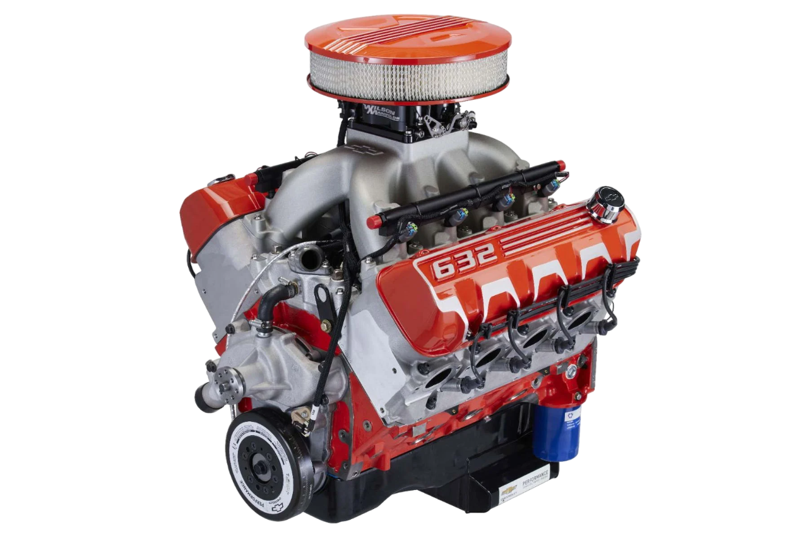
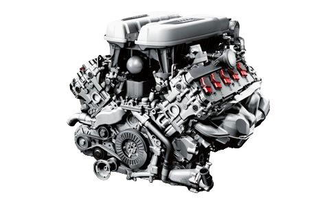
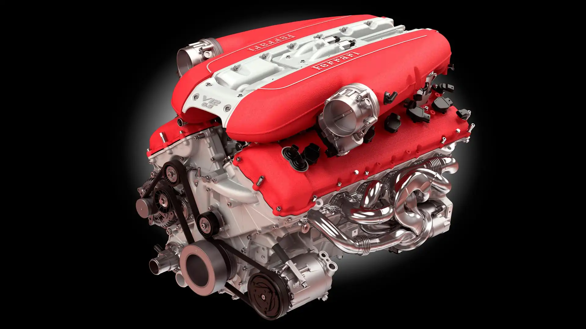

O que é um motor V6? Como o próprio nome já diz, esse motor é aquele composto por 6 cilindros, sendo 3 cilindros de cada lado. Apesar de ser mais compacto, o motor V6 tem um ângulo estreito —
geralmente de 60° — e, por isso, apresenta uma maior vibração.
Qual a diferença de um motor V6?
Um motor V6 possui seis cilindros dispostos em forma de V, enquanto um V8 O motor possui oito cilindros dispostos em forma de V. A principal diferença é o número de cilindros, que afeta fatores
como potência, torque e eficiência de combustível.
Qual é a pontencia do motor V6?
Considerando que cada cilindro tem capacidade volumétrica de meio litro, esse motor V6 tem uma potência de 3 litros. É, portanto, o famoso motor 3.0. Outra informação importante a respeito da potência do motor tem relação com os cavalos.
Um carro de alto desempenho, por exemplo, tem de 300 a 450 cavalos de potência.
Qual é o motor V6 mais pontende do mundo
O nome do motor faz todo sentido: o tridente de Netuno é o logotipo da marca. E realmente há algo mítico por trás deste motor V6 3.0 biturbo que gera 630 cv e 74,4 kgfm
mais potência que nos V8 4.0 da Audi e que nos V8 4.4 da BMW, ambos biturbo.
Vamos falar sobre motor
V8 O QUERIDINHO

Valor $80,000
Como que funciona o motor V8
O Motor V8 é um tipo de motor de combustão interna que possui oito cilindros,
dispostos em duas fileiras de quatro cilindros cada, formando um ângulo de 90
graus entre as fileiras. Essa configuração em V proporciona uma série de vantagens em
termos de desempenho e eficiência.
Qual é a potência do V8
O resultado disso tudo no novo V8 5.2
além de um ronco delicioso e exclusivo
são 533 cv de potência a 7.500 rpm e 59,3 kgfm de torque a 4.750 rpm. Ainda mais
impressionante é a flexibilidade de calibração do motor em uma faixa de potência
excepcionalmente ampla. Este motor é o mais potente já produzido pela marca britânica
para carros de passeio. A velocidade máxima é limitada a 250 km/h.

Valor $70,000
Vamos falar sobre o motor V10
Motor V10 é uma configuração de motor a explosão que possui dez cilindros dispostos
em duas fileiras de cinco cilindros.
O ângulo entre as fileiras de cilindros mais apropriado para os motores V10 de quatro tempos é teoricamente o de 72°,
que permite o início do ciclo em cada um dos cilindros com intervalo uniforme de tempo.
Qual foi o primeiro carro V10?
Tudo começou em 1992, quando o primeiro Viper foi apresentado com um imenso motor V10 —construído pela Chrysler, mas também com
uma ajuda da Lamborghini durante o seu desenvolvimento— com 8.0 litros, 406 cv e 63 mkgf.
Motor da audi
Na versão Audi R8 Plus, o motor 5.2 V10, alcança 610 cavalos a 8250 rpm, e torque de 57,1 kgfm. A aceleração de 0 a 100 km/h com motor V8 de 4.2 litro é feita em 4,6 segundos, com velocidade máxima de 301 km/h. A versão com motorização
V10 de 5.2 litros, leva o carro a máxima de 316 km/h e 330 km/h na versão V10 Plus.

Valor $160,000
Vamos falar do motor V12 da Ferrari
V12 é uma configuração de motor de combustão interna em que 12 cilindros estão
dispostos em duas bancadas de 6 cilindros, unidas pela parte de baixo, formando um "V".Motor V12 tem 560 cavalos e 86,7 kgfm. Quase extintos, os motores de 12 cilindros ainda equipam esportivos,
conversíveis, sedãs e até SUVs. o seu motor V12 com mais de 600 cv.
Velocidade insana Motor V12 de 2700 cv atinge os incrveis 420 kmh
O motor Ferrari e seus modelos sempre nos remetem a carros caros e extremamente potentes, sendo sinônimo de luxo e performance.
O modelo 612 Scaglietti não se tornou um ponto fora da curva e vem mantendo a tradição da montadora de Maranello.
A 612 Scaglietti possui chassi inteiramente em alumínio, com motor V12 que desenvolve 540 cv à 7.250 RPM, atingindo a marca de 0 à 100 k/h em 4,2 segundos.